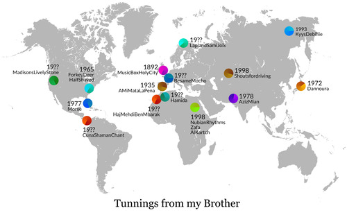

{kind=link}
Tunnings from my Brother
Esta canción está compuesta con 36 loops procedentes de 20 canciones diferentes. En este mapa puedes ver de donde procede cada canción y su fecha de grabación.
This song is made with 36 loops from 20 different songs. On this map you can see where each song comes from, and the recording date.

Las 20 canciones usadas están en los siguientes discos:
{kind=link}

Music Box Holy City
side 2 16.
Holy City
1892
"Console" Regina
Stephen Adams
ohmygodihate

Lapland Sami Joik
04 Lapland Sami Joik
19??
Canción “joik” de los sami de laponia
Joiks do not rhyme, and have no definite structure. They are typically about any subject of importance to the singer, and vary widely in content.
According to music researchers, joik is one of the longest living music traditions in Europe. Each joik is meant to reflect a person or place
Cuna Shaman Chant
19.
Cuna Shaman´s Chant
19??
recorded near Darien, Panama
lolaradio
{kind=link}
{kind=link}
Forkey Deer
Forkey Deer
1965
Sidna Myers
{kind=link}
Half Shaved
Half Shaved
1965
Wade Ward
High Atmosphere
ninehundredmilesfromhome
{kind=link}
{kind=link}
Nubian Rhythms
Nubian Rhythms
1998
Zafa
Zafa (The Groom's Wedding Procession)
1998
AlKartch
Al-Kartch
1998
Aswan Troupe for Folkloric Arts
listen

Dannoura
Dan no ura
1972
Biwa, Kinshi Tsuruta
{kind=link}
Kyys Debiliie
Khachylaan Kuo's song (from the olonkho Yuryung Uolan)
1993
Ustin Nohsorov
Yakut epopeya heroica "Kys Debiliye"
sunday-school
{kind=link}
{kind=link}
Morse
murmurs of earth
1977
voyager nasa sounds
{kind=link}
AMiMataLaPena
A mi me mata la pena
1935
incluido en "Mata la pena"
{kind=link}
Besame Mucho
Josephine baker
{kind=link}
Madisons Lively Stone
It's Time to Make A Change
listen